Introduction à l’analyse des données avec iris
Kezhan SHI
16 Novembre 2015
1 Introduction
Une collection de fonctions simples pour analyser une série de données.
2 Analyse statistique simple
2.1 Résumé des données
## Sepal.Length Sepal.Width Petal.Length Petal.Width
## Min. :4.300 Min. :2.000 Min. :1.000 Min. :0.100
## 1st Qu.:5.100 1st Qu.:2.800 1st Qu.:1.600 1st Qu.:0.300
## Median :5.800 Median :3.000 Median :4.350 Median :1.300
## Mean :5.843 Mean :3.057 Mean :3.758 Mean :1.199
## 3rd Qu.:6.400 3rd Qu.:3.300 3rd Qu.:5.100 3rd Qu.:1.800
## Max. :7.900 Max. :4.400 Max. :6.900 Max. :2.500
## Species
## setosa :50
## versicolor:50
## virginica :50
##
##
## 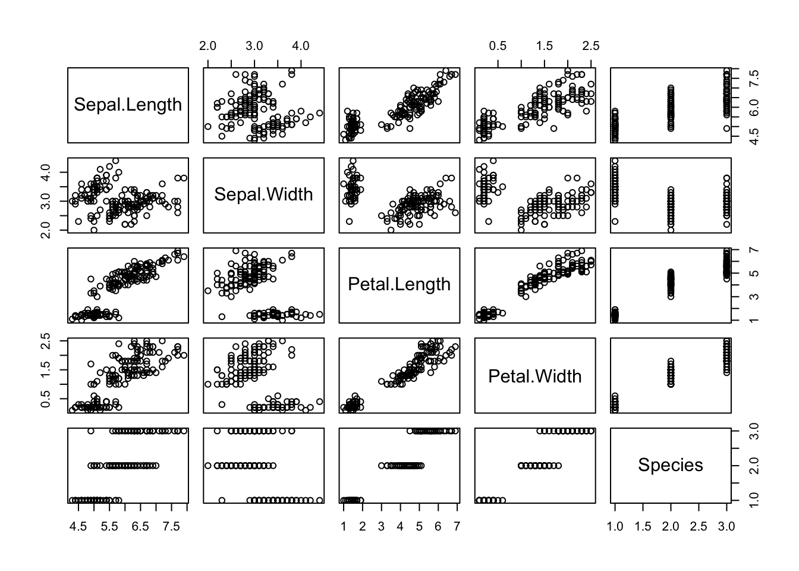
2.2 Analyse univariée
Comprendre le comportement d’une variable
quantilepour afficher les quantiles, et on peut utiliser l’optionprobspour définir les probabilités qu’on souhaite affichermeanpour la moyenne,varpour la variance etsdpour l’écart-typehistpour afficher un histogrammeplot(density())pour voir la densité- Pour aller plus loin : utiliser
ggplotpour contrôler la fenêtre du noyau, superposer plusieurs distributions
## 0% 25% 50% 75% 100%
## 4.3 5.1 5.8 6.4 7.92.3 Analyse multivariée
Comprendre la relation entre 2 ou plus de variables
- Calculer les coefficients de corrélation linéaire
- Calculer la matrice de covariance et la matrice de corrélation linéaire (
covetcor) - Tracer des graphiques avec 2 variables représentées
3 Visualisation des données à 2 variables
3.1 Visualisation de 2 variables

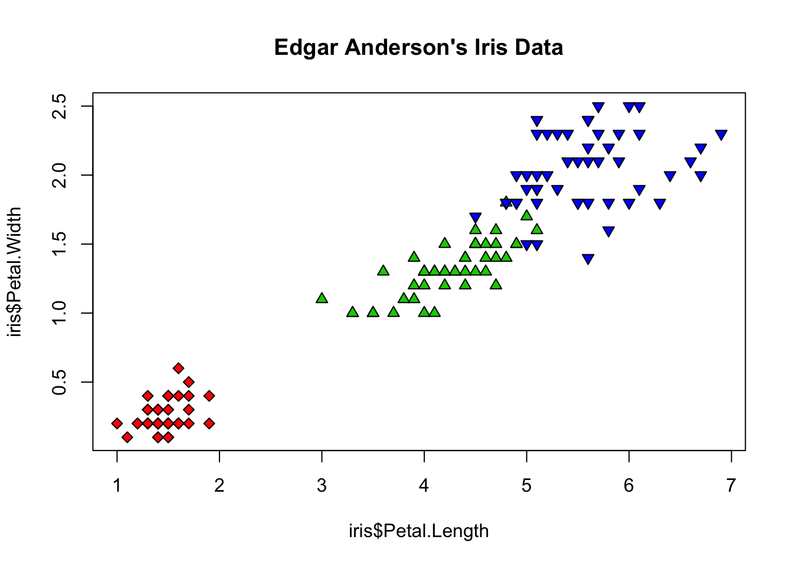
3.2 Visualisation 2 à 2
Améliorer le plot(iris)
- Mettre les couleurs
- Enlever la variable espèce
- Constater la symétrique du grahpique
- Afficher les corrélations linéaires
- Afficher les coefficients de corrélation linéaire sur la moitié du graphique
Fonctions R : pairs() ou plot()
3.3 Nuages de Points
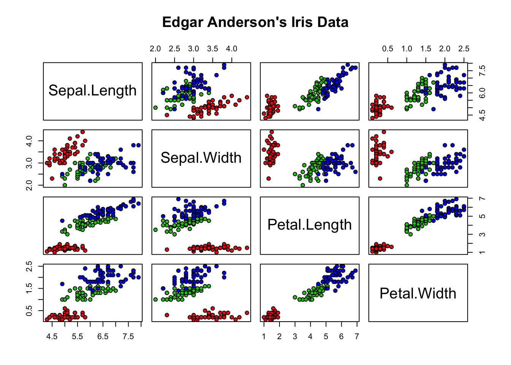
3.4 Calcul des coeff de corrélation linéaire
3.5 Plot avec coeff de corrélation
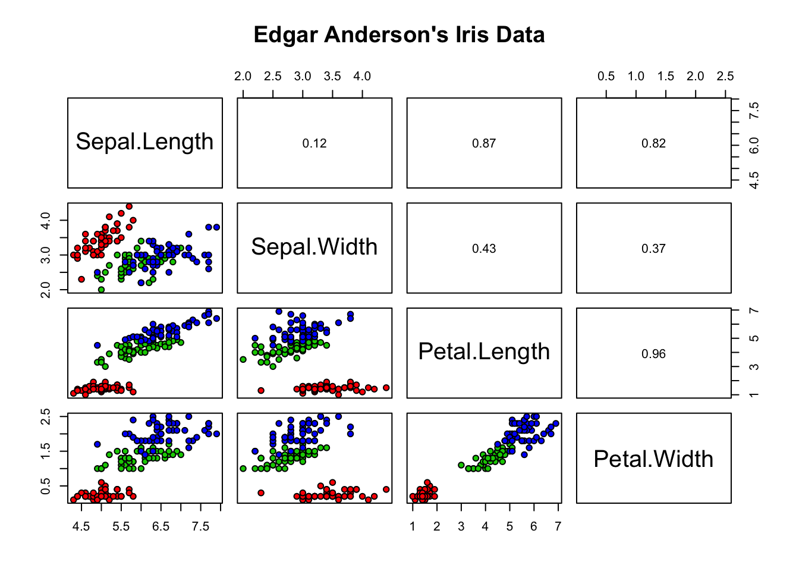
3.6 D’autres visualisations par paire
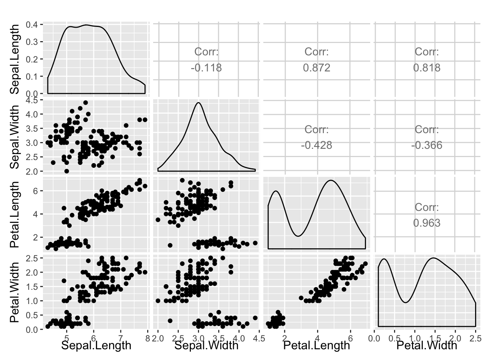
3.7 Analyse multivariée en fonction des espèces
Comme on connaît les différentes espèces, on peut calculer les éléments statistiques en fonction des espèces
- Tester
aggregate(,summary,data=iris)pour différentes variables - créer un
boxplotpour les différentes variables
3.8 Boxplot
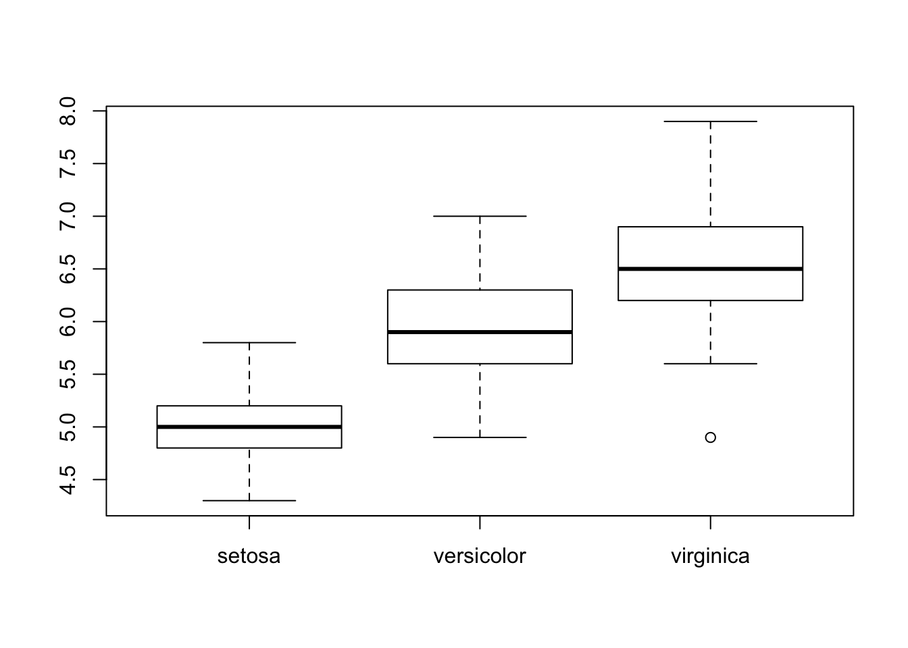
3.9 Tabplot
Distribution des variables en fonction des espèces
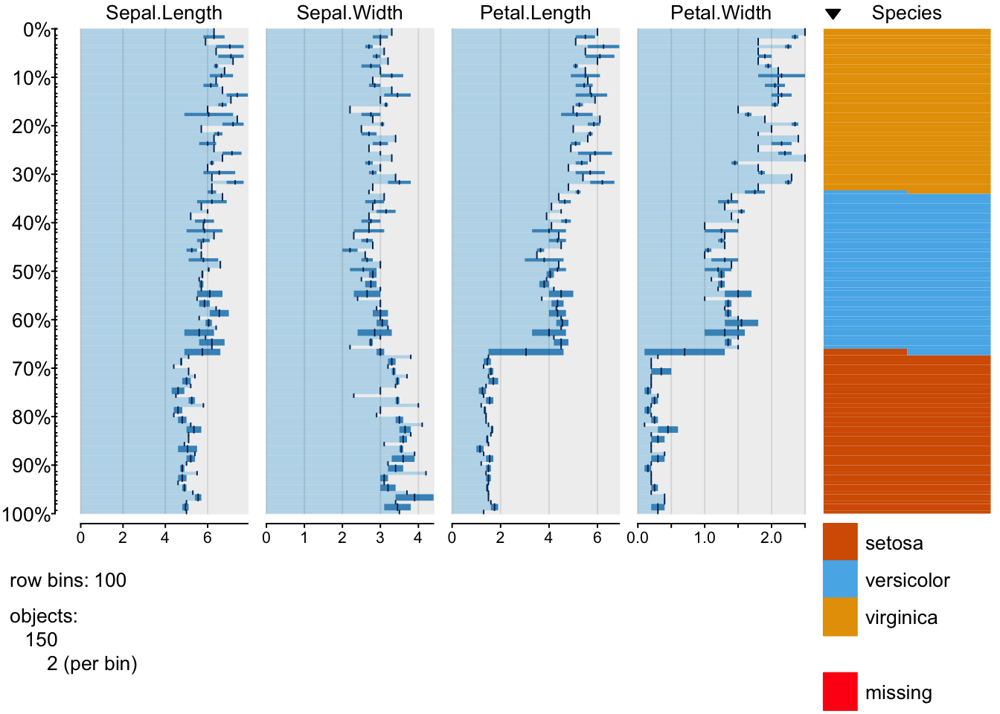
3.10 Heatmap
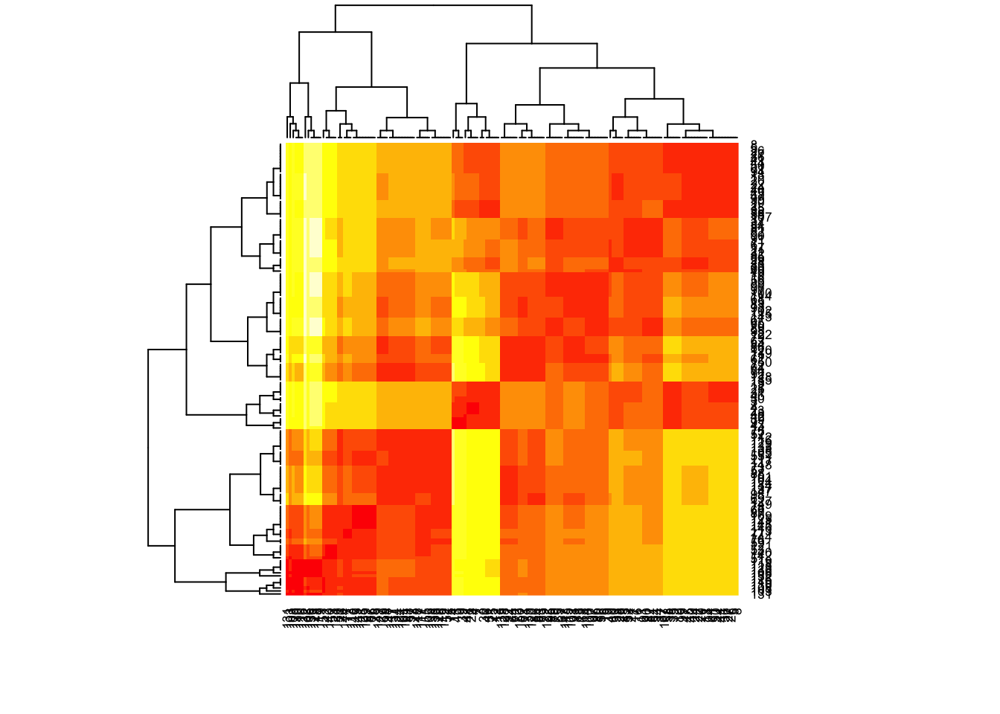
3.11 Parallel Cordinates
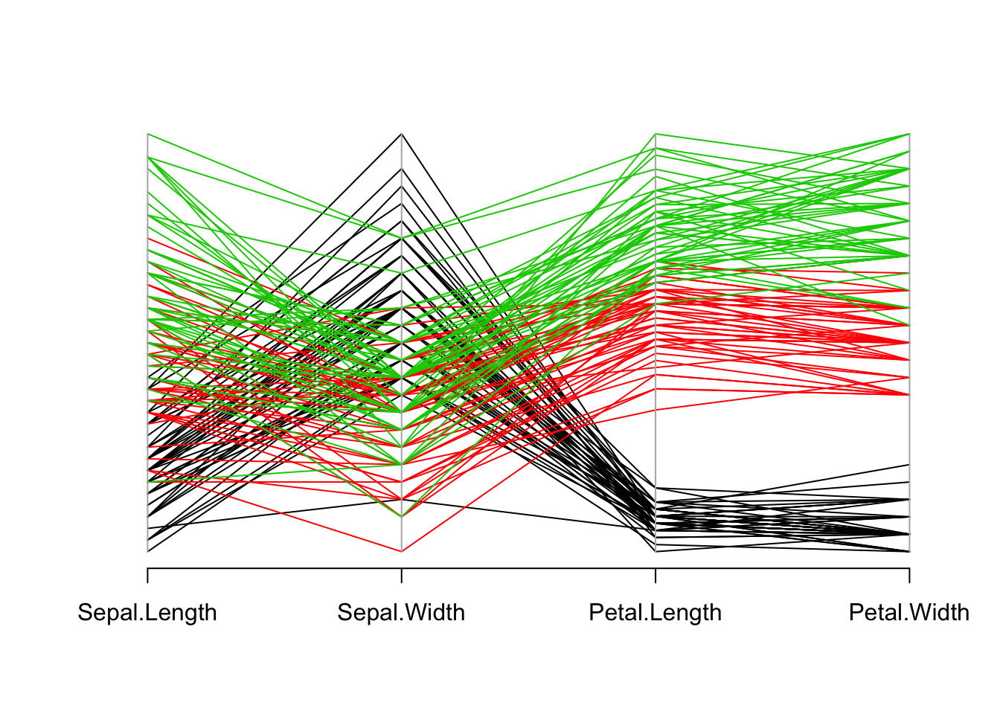
4 Visualisation de 3 variables
Jusqu’à maintenant, la visualisation est réalisée en dimension 2. Visualiser 3 variables dans l’espace
4.1 Visualisation en 3D
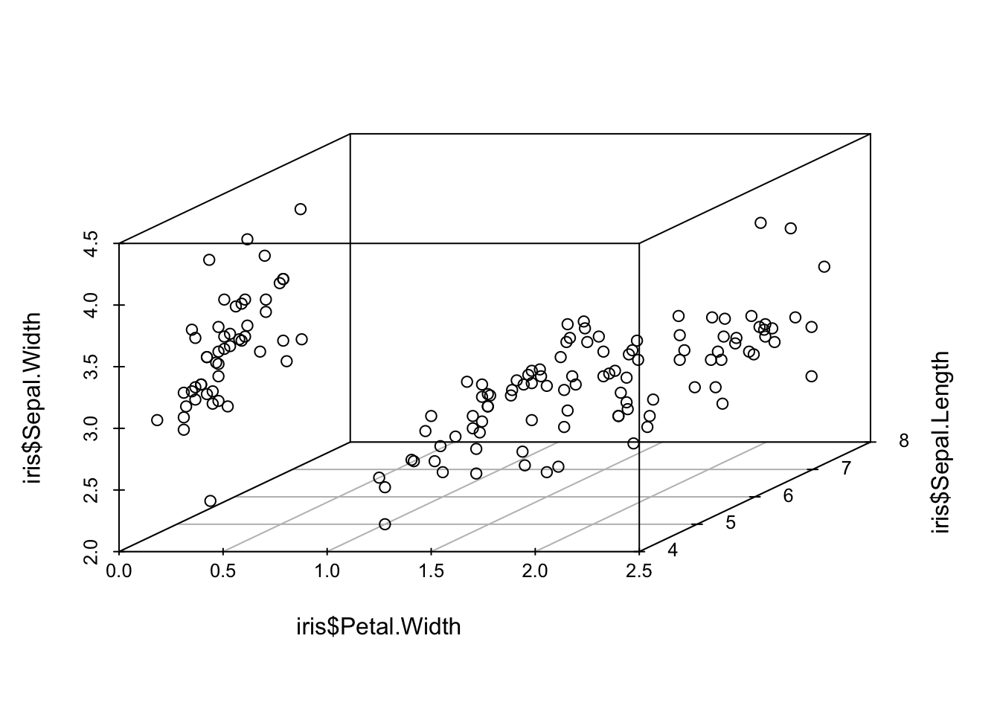
4.2 Visualisation de 3 variables interactive
4.3 Visualisation de 3 variables en dim 2


5 Techinques d’apprentissage automatique
5.1 Exploration des données
Dans le graphique en 3D interactif, on voit qu’on peut tourner les points dans l’espace. Selon le point de vue, on distingue plus ou moins mieux les 3 classes. L’idée d’analyse en composantes principales est de choisir un repère de façon à augmenter la variance inter classe.
lda permet de mieux distinguer les différentes classes.
5.2 Classification non supervisée - k-means
## K-means clustering with 3 clusters of sizes 21, 33, 96
##
## Cluster means:
## Sepal.Length Sepal.Width Petal.Length Petal.Width
## 1 4.738095 2.904762 1.790476 0.3523810
## 2 5.175758 3.624242 1.472727 0.2727273
## 3 6.314583 2.895833 4.973958 1.7031250
##
## Clustering vector:
## [1] 2 1 1 1 2 2 2 2 1 1 2 2 1 1 2 2 2 2 2 2 2 2 2 2 1 1 2 2 2 1 1 2 2 2 1
## [36] 2 2 2 1 2 2 1 1 2 2 1 2 1 2 2 3 3 3 3 3 3 3 1 3 3 1 3 3 3 3 3 3 3 3 3
## [71] 3 3 3 3 3 3 3 3 3 3 3 3 3 3 3 3 3 3 3 3 3 3 3 1 3 3 3 3 1 3 3 3 3 3 3
## [106] 3 3 3 3 3 3 3 3 3 3 3 3 3 3 3 3 3 3 3 3 3 3 3 3 3 3 3 3 3 3 3 3 3 3 3
## [141] 3 3 3 3 3 3 3 3 3 3
##
## Within cluster sum of squares by cluster:
## [1] 17.669524 6.432121 118.651875
## (between_SS / total_SS = 79.0 %)
##
## Available components:
##
## [1] "cluster" "centers" "totss" "withinss"
## [5] "tot.withinss" "betweenss" "size" "iter"
## [9] "ifault"5.2.1 Classification non supervisée - k-means plot
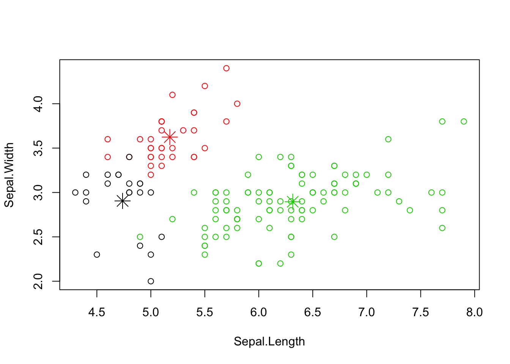
5.2.2 Classification non supervisée - k-means prédiction
##
## 1 2 3
## setosa 17 33 0
## versicolor 4 0 46
## virginica 0 0 505.3 Arbre de décision
Dans la base iris, on sait que trois espèces de fleurs sont représentées avec certaines caractéristiques (4 variables). La question qu’on se pose, c’est si une nouvelle observation arrive (avec les valeurs des 4 mesures), comment peut-on savoir à quelle espace la fleur appartient ?
Rappel : processus global de la construction d’un algorithme.
5.3.1 Arbre de décision - construction
- Créer deux bases : apprentisage et test
- Construire un arbre de décision sur la base d’apprentissage avec la librairie
party, et la fonctionctree(variable à expliquer ~ variable 1 + variable 2) - Afficher l’arbre avec
printetplot
5.3.2 Arbre de décision - Affichage
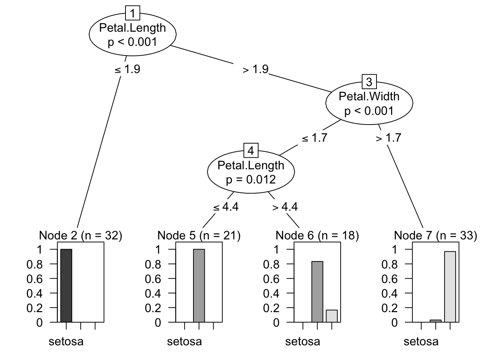
##
## Conditional inference tree with 4 terminal nodes
##
## Response: Species
## Inputs: Sepal.Length, Sepal.Width, Petal.Length, Petal.Width
## Number of observations: 104
##
## 1) Petal.Length <= 1.9; criterion = 1, statistic = 97.08
## 2)* weights = 32
## 1) Petal.Length > 1.9
## 3) Petal.Width <= 1.7; criterion = 1, statistic = 47.986
## 4) Petal.Length <= 4.4; criterion = 0.988, statistic = 8.746
## 5)* weights = 21
## 4) Petal.Length > 4.4
## 6)* weights = 18
## 3) Petal.Width > 1.7
## 7)* weights = 335.3.3 Arbre de décision - Exploitation
- Quelle est la varialbe la plus explicative ?
- Quelle est la précision de prédiction ?
- Combien a-t-on de branches et de feuilles ?
5.3.4 Arbre de décision - table de confusion
##
## setosa versicolor virginica
## setosa 32 0 0
## versicolor 0 36 3
## virginica 0 1 32Calculer les taux de faux positif, faux négatifs, taux d’erreur
5.3.5 Arbre de décision - Prédiction
##
## testPred setosa versicolor virginica
## setosa 18 0 0
## versicolor 0 13 2
## virginica 0 0 13Calculer les taux de faux positif, faux négatifs, taux d’erreur Pour aller plus loin : créer une boucle pour calculer un taux moyen d’erreur Autre pacakge rpart pour construire un arbre de décision
5.4 Random Forest - Introduction
Si on n’a pas fixé le seed() on voit que les échantillons d’apprentissage et de test sont choisis de façon aléatoire. La bagging permet de réaliser ces opérations automatiques. De plus, on peut aussi choisir les variables. Les deux randomisations ensemble, on obtient une forêt aléatoire.
5.5 Random Forest - Analyse
##
## setosa versicolor virginica
## setosa 32 0 0
## versicolor 0 35 4
## virginica 0 2 31##
## Call:
## randomForest(formula = Species ~ ., data = trainData, ntree = 100, proximity = TRUE)
## Type of random forest: classification
## Number of trees: 100
## No. of variables tried at each split: 2
##
## OOB estimate of error rate: 5.77%
## Confusion matrix:
## setosa versicolor virginica class.error
## setosa 32 0 0 0.00000000
## versicolor 0 35 2 0.05405405
## virginica 0 4 31 0.11428571## $names
## [1] "call" "type" "predicted"
## [4] "err.rate" "confusion" "votes"
## [7] "oob.times" "classes" "importance"
## [10] "importanceSD" "localImportance" "proximity"
## [13] "ntree" "mtry" "forest"
## [16] "y" "test" "inbag"
## [19] "terms"
##
## $class
## [1] "randomForest.formula" "randomForest"## MeanDecreaseGini
## Sepal.Length 8.074475
## Sepal.Width 1.514219
## Petal.Length 25.792264
## Petal.Width 33.054363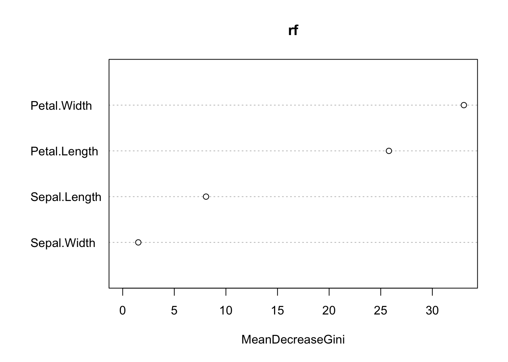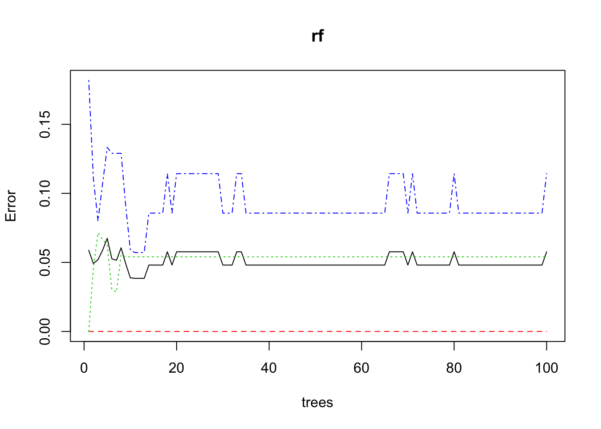
5.5.1 Random Forest - Prédiction 1
##
## irisPred setosa versicolor virginica
## setosa 18 0 0
## versicolor 0 12 1
## virginica 0 1 14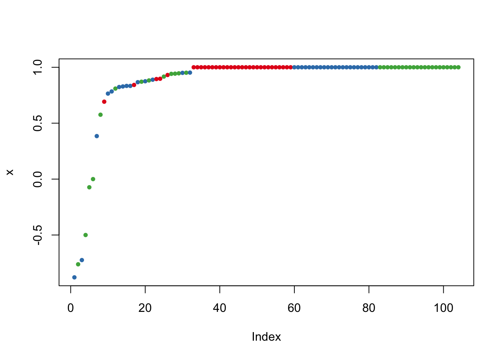
Copyright © 2016 DatavISUP